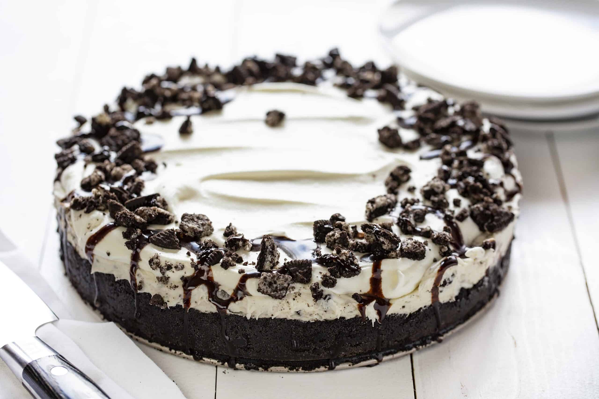

Classic Oreo Cheesecake Recipe
Ingredients:
- 20 Oreo cookies, crushed
- 6 tablespoons unsalted butter, melted
- 16 oz (450g) cream cheese, softened
- 1 cup granulated sugar
- 3 large eggs
- 1 cup heavy whipping cream
- 1 teaspoon vanilla extract
- 15 Oreo cookies, crushed (for filling)
- ¾ cup chocolate chips (for ganache)
- 4 Oreo cookies, crushed (for topping)
Instructions:
- Preheat the oven to 325°F (163°C). Grease a springform pan.
- Mix crushed Oreos with melted butter and press into the pan to form the crust.
- In a bowl, beat cream cheese and sugar until smooth.
- Add eggs one at a time, mixing well after each addition.
- Blend in heavy cream, vanilla extract, and crushed Oreos.
- Pour the mixture over the crust and smooth the top.
- Bake for 60-70 minutes, until the center is just set.
- Turn off the oven, crack the door slightly, and let the cheesecake cool inside for 30 minutes.
- Refrigerate for at least 4 hours before serving.
- Prepare the ganache by melting chocolate chips with heavy cream, then spread over the cheesecake.
- Top with crushed Oreos and enjoy!